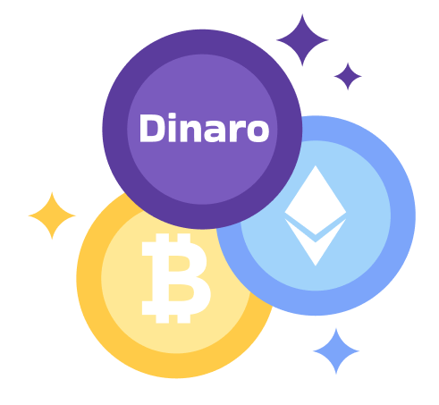

<ion-content class="wel">
  <ion-slides pager="true" options="slideOpts">
    <ion-slide class="slideBG">
      <div class="slide1">
        <h2 class="slide1">Dinaro</h2>
      </div>
      <div class="pick">
        <h4 class="pick">اختر بلدك</h4>
      </div>
      <ion-item class="item-currency"> 
        <ion-label>Currency</ion-label>
        <ion-select   [selectOptions]="{cssClass : 'select-currency'}" (ionChange)="changeCurrentCurrency()" (click)="initCurrencyIcon()" [(ngModel)]="currentCurrency">
            <ion-option  class="select-currency" *ngFor="let currency of currencyList" [value]="currency">
              {{currency | uppercase}}
            </ion-option>
          </ion-select>
    </ion-item>
    </ion-slide>

    <ion-slide class="slideBG">
      
      
      
      <h2 class="slide2">تنويه</h2>
      <p class="slide2">
        ﻣﺼﺮف ﻟﻴﺒﻴﺎ اﻟﻤﺮﻛﺰي ﻟﻢ ﻳﺼﺪر اﻟﻘﻮاﻧﻴﻴﻦ اﻟﺘﻲ ﺗﻨﻈﻢ اﻟﻌﻤﻞ ﻓﻲ ﺳﻮق اﻟﻌﻤﻠﺎت
        اﻟﺮﻗﻤﻴﺔ ﻟﺬﻟﻚ ﻫﺬا اﻟﺘﻄﺒﻴﻖ ﻟﻤﺘﺎﺑﻌﺔ اﻟﺴﻮق وﻟﻴﺲ ﻟﻠﺘﺪاول
      </p>
      
    </ion-slide>

    <ion-slide class="slideBG">
      
      

      <h2 class="slide3">لماذا دينارو؟</h2>
      <p class="slide3">
        ﺗﺎﺑﻊ اﻟﺄﺳﻌﺎر واﻟﺒﻴﺎﻧﺎت اﻟﺪﻗﻴﻘﺔ
        <br> 
        اﺿﺒﻂ اﻟﻤﻨﺒﻪ ﻋﻠﻰ ﺣﺪود ﻋﻠﻴﺎ ودﻧﻴﺎ ﻟﻠﺴﻌﺮ
        <br> 
        ﺗﺎﺑﻊ آﺧﺮ اﻟﺄﺧﺒﺎر واﻟﻤﻘﺎﻟﺎت واﻟﺘﺤﻠﻴﻠﺎت
        <br>
         ﺷﺎرك ﻓﻲ اﻟﻨﻘﺎﺷﺎت واﻟﻨﺪوات 
        
         <br>
         ﺷﺎرك ﻓﻲ
        اﻟﺪورات اﻟﺘﻌﻠﻴﻤﻴﺔ واﻟﺘﺪرﻳﺒﻴﺔ
      </p>
    </ion-slide>

    <ion-slide class="slideBG">
      
      
      <h2>هل أنت جاهر</h2>
      <span (click)="hideWelcomePage()" > 
               إبدأ
        <ion-icon slot="end" name="arrow-forward"></ion-icon></span>
    </ion-slide>
  </ion-slides>
</ion-content>
